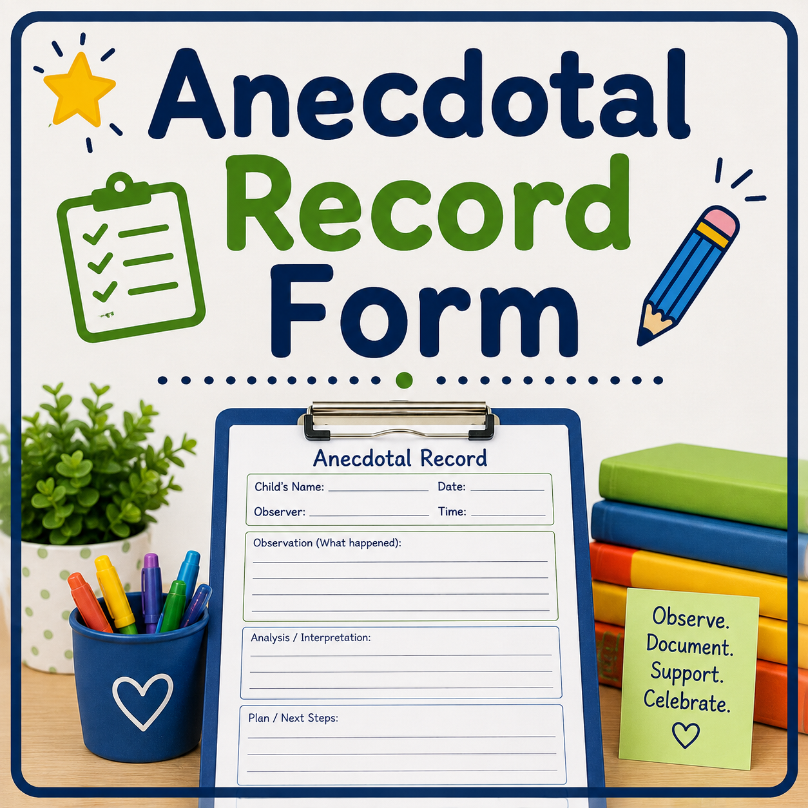

Most Popular
Anecdotal Record Form
Record objective observations of children's conversations, discoveries, social interactions, and developmental milestones as they naturally occur throughout the day.
- ✔ Objective Documentation
- ✔ Child Quotes
- ✔ Teacher Reflection
- ✔ Next Steps